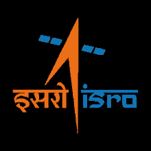
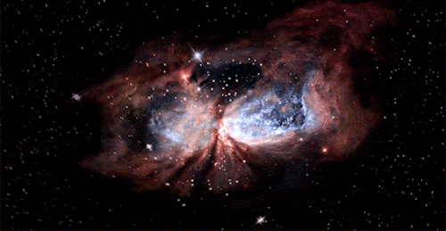

Indian Space Missions 2024: Full list of significant space missions by ISRO.
"Explore the captivating journey of ISRO's missions through this exceptional video compilation,
a testament to India's prowess in space exploration. A must-watch for all enthusiasts!"
"Experience the awe-inspiring moment of Chandrayaan 3's historic landing with this remarkable video.
Witness the culmination of India's ingenuity and determination in space exploration."
INDIAN SPACE RESEARCH ORGANISATION

About ISRO:
The Indian Space Research Organisation (ISRO) is India's national space agency, renowned for its pioneering efforts in space exploration, satellite development, and space technology research. Since its inception in 1969, ISRO has been at the forefront of India's space endeavors, consistently pushing the boundaries of scientific innovation and technological excellence.
Our Mission:
At ISRO, our mission is to harness space technology for national development, foster scientific research, and explore the mysteries of the universe. We are committed to advancing India's socio-economic progress through space exploration and satellite-based applications, while also contributing to the global scientific community.
Key Achievements:
Mars Orbiter Mission (Mangalyaan): In 2014, ISRO made history by successfully placing India's first interplanetary spacecraft, Mangalyaan, in orbit around Mars, making India the first Asian nation to reach Mars orbit and the fourth space agency in the world to do so.
Chandrayaan Missions: ISRO's Chandrayaan-1 and Chandrayaan-2 missions aimed at lunar exploration, including the discovery of water molecules on the lunar surface, have significantly enhanced our understanding of the Moon and its resources.
Navigation Satellite System (NavIC): ISRO's Navigation with Indian Constellation (NavIC) is a regional satellite-based navigation system designed to provide accurate position information service to users in India and the surrounding region.
Ongoing Initiatives:
Gaganyaan: ISRO's ambitious manned space mission, Gaganyaan, aims to send Indian astronauts to space, marking India's entry into human spaceflight.
SSLV: The Small Satellite Launch Vehicle (SSLV) is a cost-effective launch vehicle designed by ISRO to cater to the growing demand for launching small satellites into orbit.
Earth Observation Satellites: ISRO continues to develop and deploy advanced Earth observation satellites for applications such as weather forecasting, natural resource management, and disaster monitoring.
Collaborations and Partnerships:
ISRO collaborates with space agencies, research institutions, and industries worldwide to foster innovation, share expertise, and advance space exploration for the benefit of humanity.
Get Involved:
Explore ISRO's website to learn more about our projects, missions, and opportunities for collaboration. Join us in our journey to unlock the mysteries of the cosmos and harness the power of space technology for a better tomorrow.
Connect with Us:
Follow us on social media and stay updated with the latest news, events, and achievements from ISRO.
Join ISRO in shaping the future of space exploration and technology!
"Dive into the cosmos with ISRO's captivating space videos. Explore the universe's wonders from your screen."
The galaxy is an awe-inspiring masterpiece of the cosmos.
The graceful dance of galaxies through the universe is a captivating spectacle of cosmic elegance.
The mysterious motion of black holes through space is a mesmerizing display of celestial power and intrigue.

Nebulae are celestial masterpieces, painting the cosmos with their vibrant colors and ethereal beauty, captivating the hearts and minds of stargazers everywhere.
Star clusters are like glittering jewels strewn across the velvet canvas of space, captivating observers with their stunning congregation of twinkling stars, each one a beacon of cosmic brilliance.